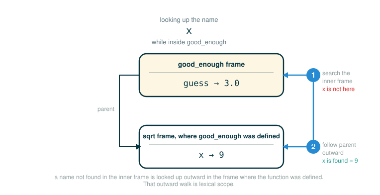

3.2 Definitions, Procedures, and Lexical Scope
Expressions let Scheme compute values. Definitions let Scheme remember names. That second idea is what turns a calculator into a programming language: once you can name a value or a procedure, you can build it once and reuse it everywhere.
By the end of this lesson you will be able to do four things. You will use define to bind a name to a value. You will use define to create a procedure (Scheme's word for a function-like value) and call it. You will read a procedure with more than one parameter and a procedure that branches with if. And you will explain lexical scope: why a procedure defined inside another procedure can see the outer procedure's names.
A name is not magic. It is an entry in an environment: a place where the interpreter stores a connection between a name and a value. Hold onto that sentence; every idea in this lesson is a variation on it.
Labels on a Supply Shelf
Imagine a classroom supply shelf. Every box has a label on the front. If a box is labeled markers, you do not open every box on the shelf to find markers, and you do not need to remember which physical box they are in. You read the label, and it points you straight to the contents.
A definition in Scheme writes a label like that. The name goes on the front of the box; the value goes inside. From then on, whenever you write the name, the interpreter reads the label and hands you the contents.
A procedure is a slightly fancier box. Instead of holding a fixed value like a number, it holds a small machine: a recipe with blanks in it. You hand the machine some values, it fills in the blanks, runs the recipe, and gives you back a result. Naming that machine means you can run the same recipe again and again without rewriting it.
Defining Names
Values can be named using the define special form. define is a special form, not an ordinary call: it does not compute a value to print, it changes the environment by adding a binding.
(define pi 3.14)
(* pi 2)The first line stores the binding from the name pi to the value 3.14. The second line then uses that binding: the interpreter looks up pi, finds 3.14, so (* pi 2) becomes (* 3.14 2), which evaluates to 6.28.
Here is the first line, token by token. Read each branch row as one piece of the line; the final row tells you what the line does.
(define pi 3.14)
├─ ( ........... begins the define special form
├─ define ...... marks this as a definition, not a normal call
├─ pi .......... the name to bind in the environment
├─ 3.14 ........ the value to store under that name
├─ ) ........... ends the definition
└─ performs ..... binds the name pi to the value 3.14Notice the final row does not say "evaluates to" a number. A definition performs an action on the environment; it does not produce a value the way (* pi 2) does. After the action, the environment holds a new binding, which we can picture as a table of names and values:
Global frame
pi -> 3.14The word frame matters. Names do not live inside the characters of your program; they live in a frame in the environment. The interpreter creates the binding only after it evaluates the definition, and it looks the name up in that frame every time you use it.
One small note on the number. A more precise value of pi is 3.14159, and you will sometimes see it written that way. The exact decimal is not the point here. The point is that define creates a binding you can reuse, whether the value is 3.14, 3.14159, or anything else.
Defining Procedures
New functions, called procedures in Scheme, can be defined using a second version of the define special form. For example, to define squaring, we write:
(define (square x) (* x x))This one line creates a procedure and binds it to the name square. The difference from naming a value is the inner parentheses around (square x): that group names the procedure and lists its formal parameters.
Walk the line token by token.
(define (square x) (* x x))
├─ ( ........... begins the define special form
├─ define ...... marks this as a procedure definition
├─ ( ........... begins the name-and-parameters group
├─ square ...... the name to bind to the new procedure
├─ x ........... the formal parameter, a local name for the argument
├─ ) ........... ends the name-and-parameters group
├─ ( ........... begins the body expression
├─ * ........... the multiplication operator in the body
├─ x ........... the first factor, the argument value
├─ x ........... the second factor, the same argument value
├─ ) ........... ends the body expression
├─ ) ........... ends the definition
└─ performs ..... binds square to a procedure that returns (* x x)The general form of a procedure definition is:
(define (<name> <formal parameters>) <body>)This template is not something you run literally; the angle brackets mark blanks you fill in. The <name> is a symbol to be associated with the procedure definition in the environment. The <formal parameters> are the names used within the body of the procedure to refer to the corresponding arguments of the procedure. The <body> is an expression that will yield the value of the procedure application when the formal parameters are replaced by the actual arguments to which the procedure is applied. The <name> and the <formal parameters> are grouped within parentheses, just as they would be in an actual call to the procedure being defined.
Calling a Procedure
Before the official calls, warm up with the simplest possible one. This call is a teaching warm-up, not from the original text, but it uses the same procedure.
(square 5)Calling a procedure creates a new local frame. The interpreter looks up square, finds the procedure, and makes a frame that binds the formal parameter x to the argument value 5:
Global frame
square -> procedure
Call frame for square
x -> 5The body (* x x) is evaluated in that call frame, so both appearances of x mean 5, and the result is 25.
Having defined square, the original text uses it in three call expressions. Each one shows the same procedure receiving a different kind of operand expression.
(square 21)The argument is already a number, so x is bound to 21 and the body evaluates to 441.
(square (+ 2 5))Here the argument is itself an expression. The normal call rule says to evaluate the operands first, so (+ 2 5) produces 7, then square is applied to 7, producing 49.
(square (square 3))The argument is a nested call. Evaluate the inner call first:
(square 3) -> 9Then the outer call becomes:
(square 9) -> 81All three reinforce the same rule for a normal call: evaluate the operator, evaluate the operands, then apply the procedure to the resulting argument values.
Procedures with Multiple Parameters
User-defined functions can take multiple arguments and include special forms. Here a procedure averages two numbers:
(define (average x y)
(/ (+ x y) 2))There are two formal parameters now, x and y, so a call must supply two arguments. Read the body from the inside out: add x and y, then divide that sum by 2.
Warm up with a call whose numbers are easy to check in your head. This call is a teaching warm-up, not from the original text.
(average 10 20)The call frame binds x to 10 and y to 20, so the body becomes:
(/ (+ 10 20) 2)
(/ 30 2)
15The parameters x and y are local names. They exist only while this particular call is being evaluated; they do not leak out and they do not collide with an x used elsewhere.
The original text's check is:
(average 1 3)The call frame binds x to 1 and y to 3, so the body becomes:
(/ (+ 1 3) 2)
(/ 4 2)
2Branching Inside a Procedure
A procedure body can be a special form, such as if. The original text defines absolute value this way. Absolute value measures distance from zero, so the result is never negative:
In Scheme:
(define (abs x)
(if (< x 0)
(- x)
x))Then the source checks it:
(abs -3)The body is a single if expression. It does not change anything in memory; it chooses which value the whole procedure produces. Because if is a special form, only the chosen branch is evaluated, and the other branch is skipped entirely.
Trace the source check. The interpreter binds x to -3, then evaluates the body:
(< -3 0) -> true
(- -3) -> 3The predicate is true, so the consequent (- x) is chosen and the result is 3. The alternative x is never touched.
To see the other branch fire, try a positive input:
(< 6 0) -> false
6 -> 6Now the predicate is false, so the alternative x is chosen and the unused consequent (- x) is skipped. That selective evaluation is exactly why if must be a special form and not a normal call: a normal call would evaluate both branches before choosing.
Building a Procedure from Helper Procedures
Scheme supports local definitions with the same lexical scoping rules as Python. To see why that matters, the original text builds a fuller example: computing a square root by repeated guessing.
For a beginner, square roots can feel like a sudden jump, so start from the goal. A square root of is a number where:
If , then is a square root, because:
Computers often approximate a square root by guessing and improving. If a guess is too low or too high, average it with divided by the guess to get a closer one:
The original text organizes that idea with nested definitions and recursion. The procedure for computing square roots looks like this:
(define (sqrt x)
(define (good-enough? guess)
(< (abs (- (square guess) x)) 0.001))
(define (improve guess)
(average guess (/ x guess)))
(define (sqrt-iter guess)
(if (good-enough? guess)
guess
(sqrt-iter (improve guess))))
(sqrt-iter 1.0))
(sqrt 9)This is dense, so read the inside as a small team of helpers, each defined within sqrt:
- good-enough? checks whether a
guessis close enough by comparing(square guess)to x. By convention, Scheme procedures that answer a yes/no question have names ending in a question mark, like good-enough?; the ? is just part of the name, not an operator. - improve produces a better
guessusing the averaging rule above. - sqrt-iter is recursive: if the guess is good enough it returns the guess, otherwise it improves the guess and tries again.
(sqrt-iter 1.0)is the last line of the body; it starts the whole process from the first guess 1.0.
The source then evaluates (sqrt 9). The intended result is close to 3, because:
The displayed value may be an approximation rather than exactly 3, because the loop stops as soon as the guess is within 0.001, not when it is mathematically perfect.
The crucial detail is that good-enough?, improve, and sqrt-iter all use x, even though x is a parameter of the outer sqrt procedure, not of the helpers. That is lexical scope, and the next section explains exactly how it works.
Lexical Scope
Lexical scope means a procedure can refer to names from the environment where it was defined, not just from the call that runs it. The helpers in sqrt are written inside sqrt, so their surrounding environment is the frame created when sqrt was called, and that frame holds:
x -> the number whose square root we wantWhen good-enough? uses x, the interpreter does not find x in good-enough?'s own call frame. So it looks outward along the chain of environments to the frame where sqrt was called, finds x there, and uses that value. The lookup walks from the inner frame toward the outer one until the name is found.
The figure below shows this outward lookup along the chain of environments to the frame where the procedure was defined.

This is the same environment-chain idea you have already seen with nested functions in Python, where an inner function can read a variable from the function that encloses it. The following Python models that relationship.
# (1)
def make_sqrt_checker(a):
def good_enough(x):
return abs(x * x - a) < 0.001
return good_enough
check_16 = make_sqrt_checker(16)
print(check_16(4))
print(check_16(5))
Expected output:
True
FalseThe inner Python function good_enough remembers the outer name a, exactly the way good-enough? remembers x inside sqrt. Same chain of frames, same outward lookup, two different languages.
Lambda Expressions
So far every procedure got a name as it was created. But you do not always need a name. Anonymous functions are created using the lambda special form. lambda is used to create procedures in the same way as define, except that no name is specified for the procedure:
(lambda (<formal-parameters>) <body>)This is the general form, a template rather than something you run literally: <formal-parameters> is where the parameter names go, and <body> is the expression to evaluate. Here is a concrete lambda that squares its argument. It is a teaching warm-up, not from the original text, but it shows the shape.
(lambda (x) (* x x))Walk it token by token.
(lambda (x) (* x x))
├─ ( ........... begins the lambda special form
├─ lambda ...... marks this as an anonymous procedure
├─ ( ........... begins the formal-parameter list
├─ x ........... the single formal parameter
├─ ) ........... ends the formal-parameter list
├─ ( ........... begins the body expression
├─ * ........... the multiplication operator in the body
├─ x ........... the first factor
├─ x ........... the second factor
├─ ) ........... ends the body expression
├─ ) ........... ends the lambda
└─ evaluates to a procedure of one parameter x with body (* x x)Notice the final row this time says evaluates to, not performs. A lambda expression is an expression: it produces a value, and that value is a procedure. The resulting procedure is just as much a procedure as one that is created using define. The only difference is that it has not been associated with any name in the environment.
That is why you can take a lambda and bind it with define yourself. In fact, the following expressions are equivalent:
(define (plus4 x) (+ x 4))
(define plus4 (lambda (x) (+ x 4)))The first line uses the procedure-definition shorthand. The second line says the same thing the long way: create a lambda procedure, then bind it to the name plus4 just as you would bind any value. Both leave the environment with plus4 pointing at a procedure that adds 4 to its argument. The difference is only surface syntax.
A Lambda as the Operator
Like any expression that has a procedure as its value, a lambda expression can be used as the operator in a call expression:
((lambda (x y z) (+ x y (square z))) 1 2 3)This looks intimidating because it opens with two left parentheses, so separate the layers. The inner expression (lambda (x y z) (+ x y (square z))) is the operator; the values 1, 2, and 3 after it are the operands.
((lambda (x y z) (+ x y (square z))) 1 2 3)
├─ ( ............................... begins the outer call expression
├─ (lambda (x y z) (+ x y (square z))) .. the operator: a procedure of x, y, z
├─ 1 ............................... first operand, binds x
├─ 2 ............................... second operand, binds y
├─ 3 ............................... third operand, binds z
├─ ) ............................... ends the outer call expression
└─ evaluates to 12The operator expression evaluates to a procedure, and that procedure is applied immediately to the arguments 1, 2, and 3. With x bound to 1, y to 2, and z to 3, the body runs:
(+ 1 2 (square 3))
(+ 1 2 9)
12The procedure was created and used on the spot, never named, and the whole expression produces 12.
⚠Common Beginner Traps
Trap 1: Thinking define is a normal function call. It is a special form. It does not compute a value to print; it performs an action by adding a binding to the environment.
Trap 2: Confusing parameters and arguments. In (define (square x) (* x x)), x is the formal parameter, a placeholder. In (square 5), 5 is the argument, the actual value that fills the placeholder for that one call.
Trap 3: Expecting if to evaluate both branches. Because if is a special form, only the chosen branch is evaluated. In (abs -3), the alternative x is never touched.
Trap 4: Thinking a nested helper cannot see the outer procedure's names. Under lexical scope, a procedure can refer to names from the environment where it was defined, so the helpers in sqrt can all use x.
Trap 5: Reading lambda as "mystery." A lambda expression simply evaluates to a procedure value. If you can read its parameter list and its body, you can read the lambda.
✓Check Your Understanding
- Using square and average as defined above, what does
(average (square 3) 5)evaluate to? Work through the operands first. - In
(define (square x) (* x x)), which token names the procedure and which token is the formal parameter? - Evaluate
(square (square 3))step by step. What is the result, and what call rule did you use? - In
(abs -3), which branch of the if is evaluated and which is skipped? Why does that require if to be a special form? - Why can good-enough? use x even though x is a parameter of sqrt, not of good-enough??
- How are
(define (plus4 x) (+ x 4))and(define plus4 (lambda (x) (+ x 4)))related?
Show the answers
- 7. Evaluate the operands first:
(square 3)gives 9, and5is already a value. Then(average 9 5)runs its body(/ (+ 9 5) 2), which is(/ 14 2), so the result is 7. - square is the token that names the procedure; x is the formal parameter, the local name that will be bound to the argument value on each call.
- Evaluate the inner call first:
(square 3)gives 9. Then the outer call(square 9)gives 81. The result is 81, using the normal call rule: evaluate the operator, evaluate the operands, then apply. - The predicate
(< -3 0)is true, so the consequent(- x)is evaluated to 3 and the alternative x is skipped. if must be a special form so it can choose one branch without evaluating the other; a normal call would evaluate both operands first. - Because of lexical scope: good-enough? is defined inside sqrt, so its surrounding environment is the sqrt call frame, which holds the binding for x. The interpreter looks outward from the helper's frame and finds x there.
- They are equivalent. The first is shorthand; the second creates a lambda procedure and binds it to plus4 explicitly. Both leave plus4 bound to a procedure that adds 4 to its argument.
§Summary
Definitions add names to an environment. With define, a name can label a plain value, as in (define pi 3.14), or it can label a procedure, as in (define (square x) (* x x)). Calling a procedure creates a local frame that binds its formal parameters to the argument values and evaluates the body there, following the normal call rule of operator, operands, then application. A procedure body can branch with the if special form, which evaluates only the chosen branch. Because Scheme uses lexical scope, a procedure defined inside another, like the helpers in sqrt, can refer to names from the environment where it was defined, found by looking outward along the chain of frames. Finally, a lambda expression evaluates directly to a procedure value with no name attached; that value can be bound with define or used immediately as the operator of a call, as in ((lambda (x y z) (+ x y (square z))) 1 2 3).
▶Step-Through Checkpoint
The next block models Scheme's lexical scope using Python's nested functions. Stepping through it draws the environment diagram that makes lexical scope visible: the make_sqrt_checker frame binding a to 25 stays on the heap as the parent of the returned good_enough closure, and each check_25 call frame, holding only x, follows its parent arrow back to that frame to find a. Before you step through the block below, write down three predictions: how many local frames will open over the whole run, whether the make_sqrt_checker frame is still on screen by the time check_25(5) runs, and what values the last two lines bind to first_result and second_result.
# (2)
def make_sqrt_checker(a):
def good_enough(x):
return abs(x * x - a) < 0.001
return good_enough
check_25 = make_sqrt_checker(25)
first_result = check_25(5)
second_result = check_25(6)
Step through it one line at a time and check each prediction as the frames appear. Three local frames open: one for make_sqrt_checker, where a is bound to 25, and one for each call to check_25. The make_sqrt_checker frame survives even though its call has returned, and each good_enough frame, holding only x, follows its arrow back to that surviving frame to look up a. first_result is True, because 5 squared is exactly 25; second_result is False, because 36 misses by more than 0.001. That arrow is how good-enough? reads x from the surrounding sqrt frame in Scheme: the Python picture of lexical scope.